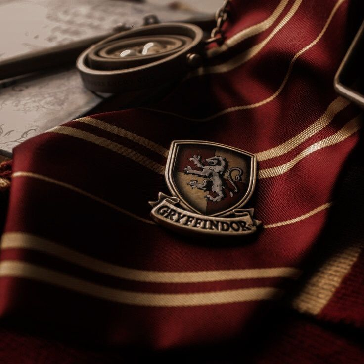
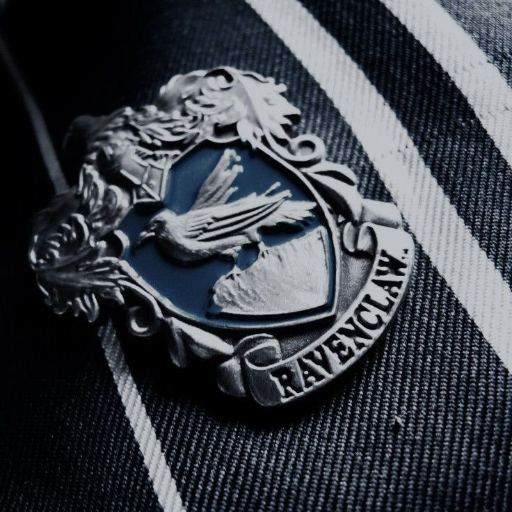
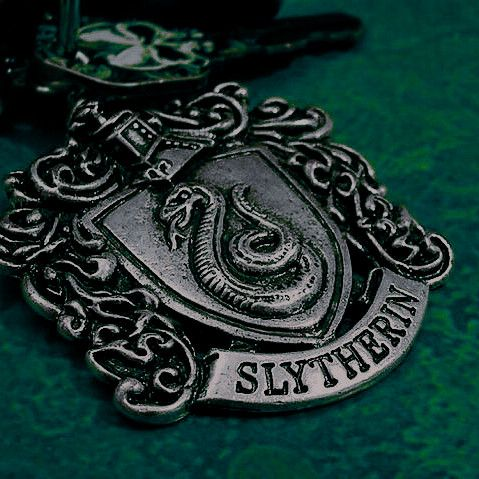

Asrama-Asrama di Sekolah Sihir Hogwarts
Setiap siswa Hogwarts ditempatkan ke salah satu dari empat asrama berdasarkan kepribadian dan nilai mereka. Berikut penjelasan tiap asrama:

Gryffindor
Dikenal karena keberanian, semangat, dan tekad yang kuat. Didirikan oleh Godric Gryffindor. Warna khasnya merah dan emas dengan lambang singa gagah.
Hufflepuff
Menjunjung tinggi kejujuran, kesetiaan, dan kerja keras. Didirikan oleh Helga Hufflepuff. Warna khasnya kuning dan hitam dengan lambang luak (badger).

Ravenclaw
Tempat bagi mereka yang bijak, kreatif, dan haus pengetahuan. Didirikan oleh Rowena Ravenclaw. Warna khasnya biru dan perunggu dengan lambang elang.

Slytherin
Dikenal dengan ambisi, kecerdikan, dan kepemimpinan. Didirikan oleh Salazar Slytherin. Warna khasnya hijau dan perak dengan lambang ular.